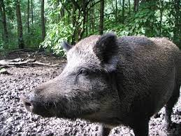
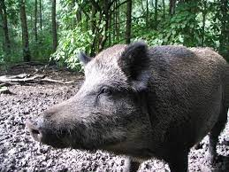

Кабан, или дикая свинья, - это массивное, внушительное животное. Его рост в холке около метра, а вес 150 килограммов. Он вооружен острыми, как бритва, клыками, длиной около 15 сантиметров. ... С помощью клыков кабан выкапывает из земли червей, личинок, а также клубни и корневища.
Кабан, также известный как вепрь, или дикая свинья, является всеядным животным, которое питается орехами, желудями, падалью, корнями, маленькими птицами или млекопитающими, яйцами, травой, фруктами и грибами.
 
